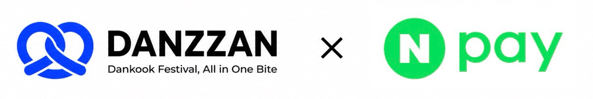
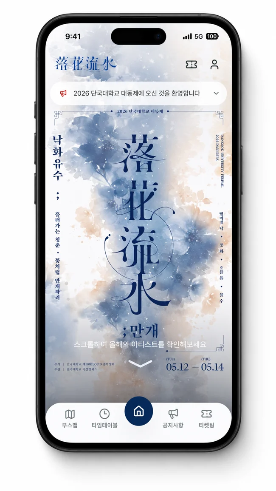
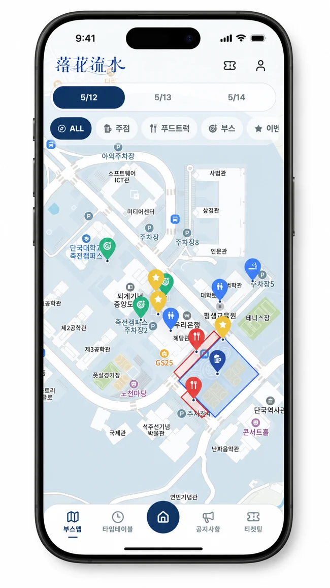
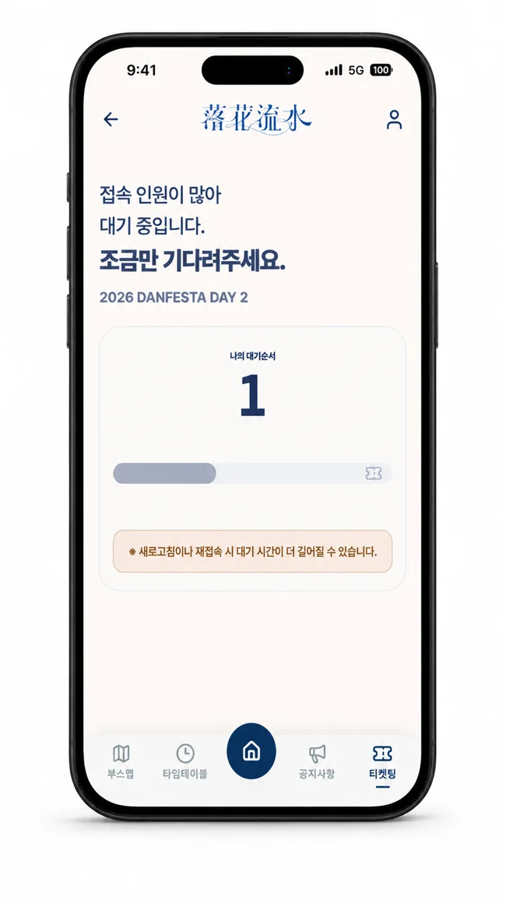

Danzzan
For a festival service used by 6,000+ people, I designed ticketing and authentication with failure paths in mind.

Face Sign entry integration


At a glance
University festival web service / Team project
- My contribution
- High-traffic ticketingConcurrent reservation handling with Redis and Lua
- Sign-in & registrationJWT refresh and error handling; sign-up validation and persistence
- Multilingual supportTranslation and failure handling
- Real users
- 6,000+ · Team operational outcome
- Operations
- Spring and autumn festivals, 2026
- Collaboration
- Student council collaboration & NAVER Face Sign entry integration
- Technologies
- Spring BootRedisLuaMySQLDocker
Context & my role
Handling traffic bursts and changing operational needs.
The team brought booth information, performances, notices, and ticket reservations into one service while allowing organizers to respond to on-site needs. Key challenges were preventing duplicate ticket allocation and presenting reservation and entry states accurately.
I owned Redis queueing and Lua ticket issuance, JWT login/signup, and translation with failure handling. More than 6,000 real users and two festival deployments are shared team outcomes. Spring focused on ticketing and entry; autumn added multilingual usability.
Concurrent requests
Treating the queue as a state and inventory problem.
I separated waiting, entry preparation, eligibility, completion, and expiry states. A Lua script checks entry eligibility, duplicate requests, and remaining inventory, then decrements stock atomically within Redis. This does not imply a distributed transaction covering MySQL.
I focused on explaining the user’s state when processing stopped between steps, not just returning a success response. Improvements distinguished empty queues, pending asynchronous reservations, expired queue admission, and requests before opening time. Other teammates contributed to Kafka/database asynchronous processing.
- Check eligibility
Queue status, opening time, and entry validity
- Atomic Redis operation
Duplicate check, inventory check, and decrement
- State & recovery
Distinguish pending, complete, expired, and failed
Operational improvements
Making failures recoverable.
An expired token attached to a login request could trigger a 401 in the authentication filter and block the user from logging in again. I corrected the recovery path by bypassing the JWT authentication filter’s checks for public login and token-refresh endpoints.
I handled translation API failures so they would not block notice creation. Translations are stored with content; missing English text falls back to Korean and can be backfilled later without overwriting existing translations.
I connected ticket times, quantities, and performance dates across admin and user screens, and refined restrictions on editing open rounds and the ticketing on/off policy. The aim was to give organizers more control over routine changes.
Collaboration
An entry flow connected with the student council and NAVER.
The festival service, built with the student council, supported an entry flow linked to NAVER Face Sign. Danzzan handled reservations, third-party data-sharing consent, and preregistration guidance; NAVER handled face registration and authentication. The project did not develop the face-recognition model.
The service explains that reservation completion and face registration are separate steps, and user needs informed later multilingual features. External coordination, event operations, frontend work, and Kafka/DB asynchronous processing include teammates’ contributions. My own contribution centers on ticketing, authentication, and translation in the backend.
Delivery & teamwork
I made progress visible before the deadline.
When work repeatedly slipped, I introduced smaller Jira tasks, sprints, and daily scrums to share progress and blockers. When the ticketing launch was subsequently brought forward, we revisited the remaining work and priorities, and the team completed development by the revised deadline.
What I learned
Development extends into day-to-day operations.
Accepting requests was only part of the work: I also had to define where users go after a failure and what operators can change. Working on ticket states, authentication recovery, and translation failures taught me to design success and recovery paths together.
My project involvement ran from December 2025 through September 2026. This case study distinguishes the service’s team outcomes from my implementation work.
The follow-up theme work is not counted as a deployed feature or part of the earlier festival operating results.
Code & evidence
The implementation and the evidence behind it.
Spring Boot / Redis / Lua / MySQL / React / Docker
Reviewed 3 November 2026 · Personal contributions, team outcomes, completed experiments, and ongoing research are distinguished.